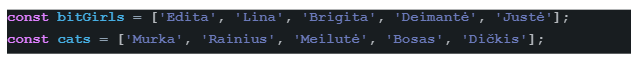
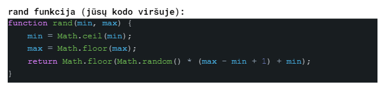

Tarpinis žinių patikrinimas #3

-
Prie masyvo bitGirls pradžios (ne galo!) pridėkite Nausėdą (po pridėjimo bitGirls turės 6 elementus).
-
Sukurkite naują masyvą bitCats iš masyvo cats taip kad naujasis masyvas turėtų elementus iš mažų, dviejų narių, masyvų: pirmas narys katinuko vardas, antras - katinuko svoris - atsitiktinės tekstinės reikšmės - “storas” arba“normalus”.
-
bitCats masyve suskaičiuokite kiek yra storų ir normalių katinukų.
-
Išrūšiuokite gautą bitsCats masyvą pagal antrą katinuko vardo raidę, abėcėlės tvarka (ne pagal visą vardą, o tik pagal antrą raidę) Tokiu būdu katinukas vardu Rainius pagal antrą “a” raidę turėtų atsidurti viršuje.
-
(BOSO lygis) Iš masyvų bitGirls ir bitCats padarykite masyvą happyCats, kurio elementai būtų masyvai iš mergaitės vardo ir katinuko vardo. Nausėdai katinuko neduokit (nes neužteks) ir Nausėdai vietoj katinuko priskirkite stringą “Barsukas”.
